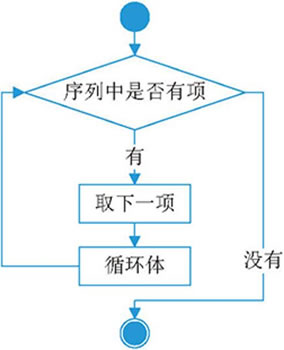
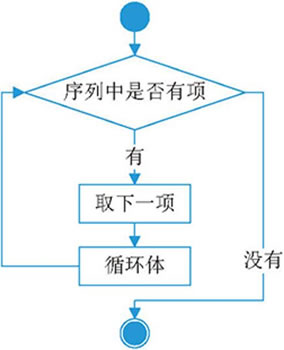

首页 > Python > Python流程控制
Python for循环及用法详解
Python 中的循环语句有 2 种，分别是 while 循环和 for 循环，前面章节已经对 while 做了详细的讲解，本节给大家介绍 for 循环，它常用于遍历字符串、列表、元组、字典、集合等序列类型，逐个获取序列中的各个元素。
for 循环的语法格式如下：
for 循环语句的执行流程如图 1 所示。

图 1 for 循环语句的执行流程图
下面的程序演示了 for 循环的具体用法：
下面程序使用 for 循环对列表进行了遍历：
例如：
for 循环的语法格式如下：
for 迭代变量 in 字符串|列表|元组|字典|集合：
代码块
for 循环语句的执行流程如图 1 所示。

图 1 for 循环语句的执行流程图
下面的程序演示了 for 循环的具体用法：
add = "http://c.biancheng.net/python/"
#for循环，遍历 add 字符串
for ch in add:
print(ch,end="")
运行结果为：
http://c.biancheng.net/python/
可以看到，使用 for 循环遍历 add 字符串的过程中，迭代变量 ch 会先后被赋值为 add 字符串中的每个字符，并代入循环体中使用。只不过例子中的循环体比较简单，只有一行输出语句。Python for循环的具体应用
for 循环进行数值循环
在使用 for 循环时，最基本的应用就是进行数值循环。比如说，想要实现从 1 到 100 的累加，可以执行如下代码：
print("计算 1+2+...+100 的结果为：")
#保存累加结果的变量
result = 0
#逐个获取从 1 到 100 这些值，并做累加操作
for i in range(101):
result += i
print(result)
运行结果为：
计算 1+2+...+100 的结果为：
5050
有关 range() 函数的具体用法，可阅读《Python range()》一节，值得一提的是，Python 2.x 中除提供 range() 函数外，还提供了一个 xrange() 函数，它可以解决 range() 函数不经意间耗掉所有可用内存的问题。但在 Python 3.x 中，已经将 xrange() 更名为 range() 函数，并删除了老的 xrange() 函数。
for循环遍历列表和元组
当用 for 循环遍历 list 列表或者 tuple 元组时，其迭代变量会先后被赋值为列表或元组中的每个元素并执行一次循环体。下面程序使用 for 循环对列表进行了遍历：
my_list = [1,2,3,4,5]
for ele in my_list:
print('ele =', ele)
程序执行结果为：
ele = 1
ele = 2
ele = 3
ele = 4
ele = 5
感兴趣的读者，可自行尝试用 for 循环遍历 tuple 元组，这里不再给出具体实例。
for 循环遍历字典
在使用 for 循环遍历字典时，经常会用到和字典相关的 3 个方法，即 items()、keys() 以及 values()，它们各自的用法已经在前面章节中讲过，这里不再赘述。当然，如果使用 for 循环直接遍历字典，则迭代变量会被先后赋值为每个键值对中的键。例如：
my_dic = {'python教程':"http://c.biancheng.net/python/",\
'shell教程':"http://c.biancheng.net/shell/",\
'java教程':"http://c.biancheng.net/java/"}
for ele in my_dic:
print('ele =', ele)
程序执行结果为：
ele = python教程
ele = shell教程
ele = java教程
除此之外，我们还可以遍历字典 values()、items() 方法的返回值。例如：因此，直接遍历字典，和遍历字典 keys() 方法的返回值是相同的。
my_dic = {'python教程':"http://c.biancheng.net/python/",\
'shell教程':"http://c.biancheng.net/shell/",\
'java教程':"http://c.biancheng.net/java/"}
for ele in my_dic.items():
print('ele =', ele)
程序执行结果为：
ele = ('python教程', 'http://c.biancheng.net/python/')
ele = ('shell教程', 'http://c.biancheng.net/shell/')
ele = ('java教程', 'http://c.biancheng.net/java/')
关注公众号「站长严长生」，在手机上阅读所有教程，随时随地都能学习。内含一款搜索神器，免费下载全网书籍和视频。

微信扫码关注公众号